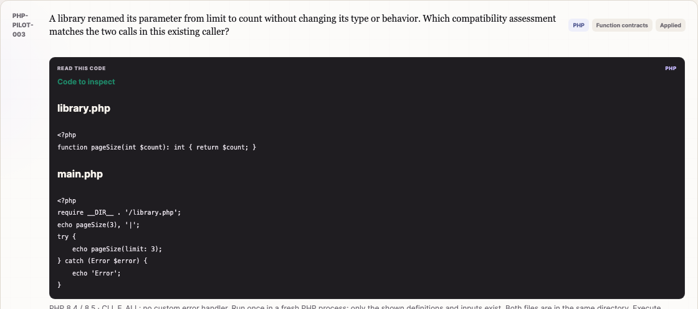
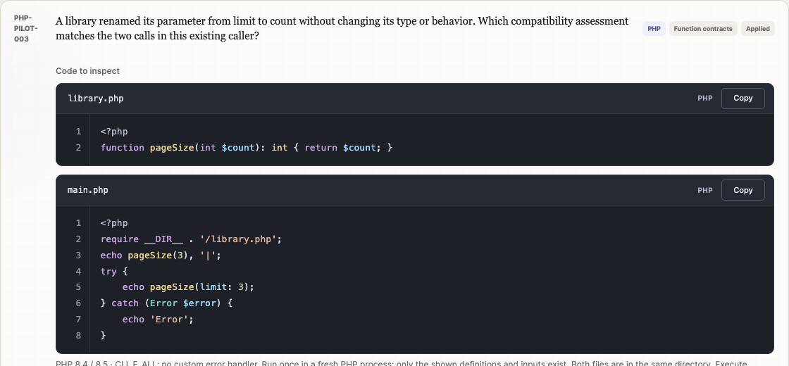
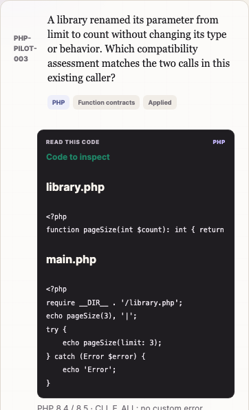
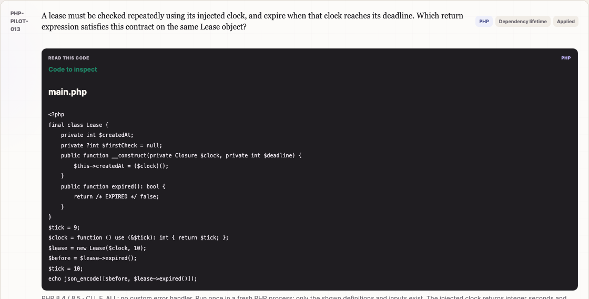
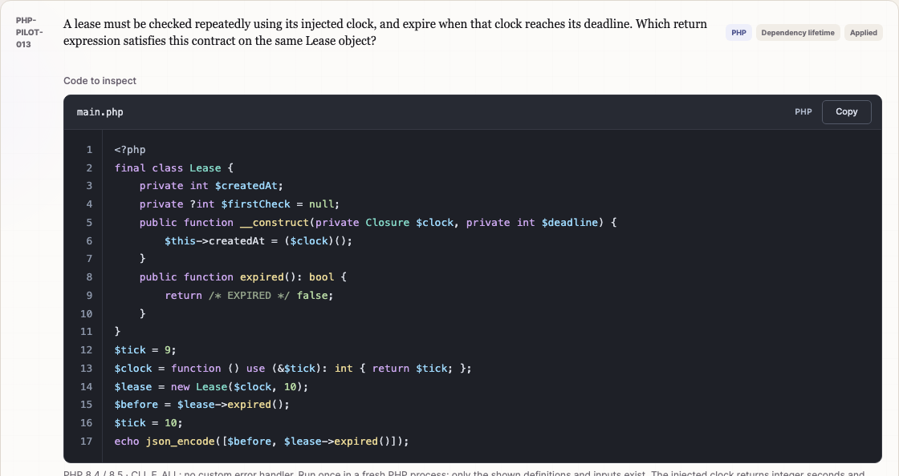
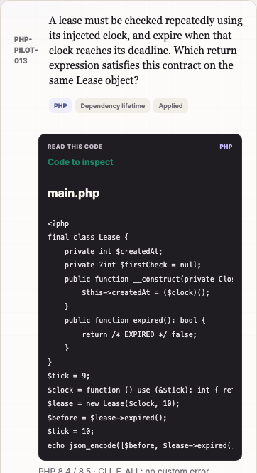
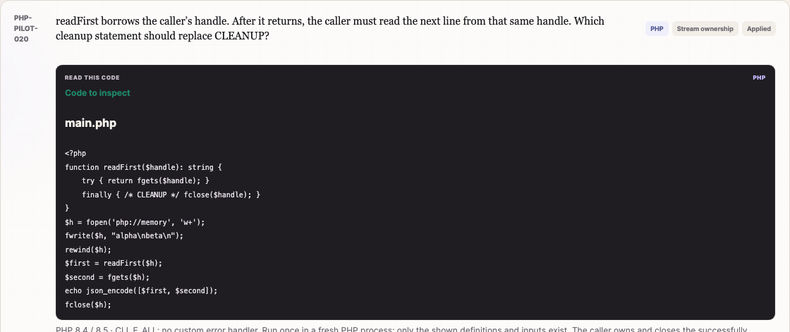
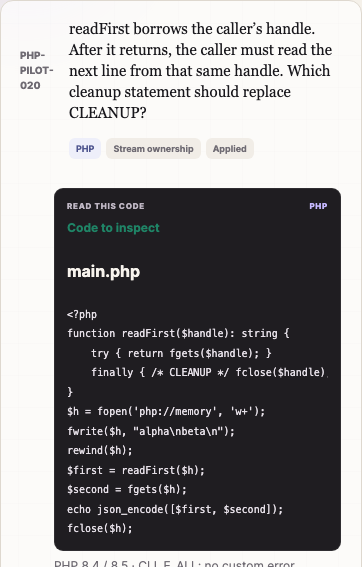

Local review · 4 November 2026 · remediation/question-quality-pilot
PHP code viewer improvements
The existing dark code panels now show PHP syntax colors, a compact filename and language header, subtle line numbers and a Copy button for each file. Indentation and source text stay exact. Long lines scroll horizontally; long files scroll within a bounded panel.
All 2,500 existing questions and the 20 PHP pilot questions are preserved. No question text, answer, ID, schema, grading logic, randomization or storage format was changed in this UI task. Nothing was pushed, merged or deployed.
The images below are actual Chrome captures of the same questions before and after the UI change. Desktop viewport: 1280 × 1000. Expand each mobile comparison for 390 × 844 captures. Click an image for full resolution.
PHP-PILOT-003 · Function contracts, two files
The library and caller now have independent file headers, line numbers and copy controls.




Compare mobile screenshots



PHP-PILOT-013 · Nested class and closure code
Larger monospace type and PHP token colors make nested blocks, variables and method calls easier to scan.




Compare mobile screenshots



PHP-PILOT-020 · Stream handling and cleanup
Comments, strings, function calls and variables are distinct while the original source remains exact.



Compare mobile screenshots



Validation results
All automated checks and all three Chrome suites passed. Browser: Chrome 156.0.8078.80, isolated headless profiles. Mobile coverage uses Chrome device metrics and real CDP touch gestures; no physical handset was tested.
| Suite | Result and evidence |
|---|---|
node tests.mjs | Full passing log. Original records and teaching notes match the previous baseline. All 24 answer permutations per PHP pilot question pass. PHP 8.4.17 and 8.5.2 each pass the existing 76 lint checks, 12 reviewed executions and 22 pinned framework-contract assertions, plus 63 pilot source/variant lint checks and 61 isolated pilot executions. |
| New source/highlighting checks | All 1,428 primary source units across both collections round-trip exactly. Checks cover PHP token categories, contextual fragments, tabs, CRLF, trailing newlines, heredoc/nowdoc, escaped entities, injection-shaped strings, plain-text fallback and pinned vendor hashes. |
| Existing main-bank Chrome suite | 9 checks passed. Results · Log. Learn, Exam, shuffle mapping, original revised questions, mobile layout and legacy/current progress remain compatible. |
| Existing PHP-pilot Chrome suite | 7 checks passed. Results · Log. All 20 Learn questions and 60 distractor rationales, all 20 Exam questions, 10/20 grading, neutral pre-submit progress and isolated stored totals pass. |
| New code-viewer Chrome suite | 8 check groups passed. Results · Log. Every one of the 22 pilot files/fragments renders and copies exactly. Verified touch scrolling, sticky gutter, both-axis scrolling of a 104-line fixture, source/metadata injection safety, clipboard failure guidance and keyboard copying without exam submission. Questions without source still render. All runtime requests stayed local under a /quiz/ project subdirectory. |
| Static packaging / whitespace | node tools/build-site.mjs prepared 20 runtime files, including the vendor license. Tests, review screenshots and PHP fixtures are excluded. git diff --check passed. |
Additional visual evidence: explicit trait fragment context, Learn feedback, neutral exam progress.


Reproduce locally
node tests.mjs
node tools/build-site.mjs
QUIZ_SITE_DIR=_site BROWSER_REPORT_DIR=code-viewer/regression node tests/browser.mjs
QUIZ_SITE_DIR=_site BROWSER_REPORT_DIR=code-viewer/pilot-regression node tests/php-pilot/browser.mjs
QUIZ_SITE_DIR=_site node tests/code-viewer/browser.mjsThe browser runners start their own local servers and temporary Chrome profiles, clean them up afterwards, and use no production service. Clipboard tests restore the pre-test clipboard contents. The existing PHP runtime suite executes only previously reviewed allowlisted fixtures in its isolated temporary environment; the viewer itself never executes question code.
Implementation and scope
js/code-viewer.mjsreplaces the app's inline rendering function. It uses the existing lesson/file shape, including fragment context, and works in questions, learning notes, reviews and the bank. Copying uses the original source string, excluding the gutter and labels. Status messages are announced; the gutter is hidden from assistive technology; scroll regions are keyboard-focusable.js/code-highlighting.mjsregisters PHP only. It consumes Highlight.js's public escaped-text/span output through a strict parser, verifies the reconstructed source, and creates text nodes and spans. There is no HTML insertion,eval, source execution or language guessing. Unexpected highlighter output safely falls back to unchanged plain text.styles.cssadds component-scoped dark styling, 13px monospace source, 1.75 line height, four-space tab display, left alignment, preserved whitespace, token colors, a sticky gutter and responsive headers. The question design and option styling remain in place.- Vendored Highlight.js 11.12.0 includes only core and PHP, totaling 27,086 bytes (10,877 gzip bytes). The viewer and wrapper add 5,091 bytes (2,150 gzip bytes), plus CSS. No package installation or runtime CDN is required. Source URLs and hashes and the BSD-3-Clause license are retained. The upstream documentation supports self-hosted ES modules with selected grammars.
- The static build allowlist includes these runtime modules and license. The new Node checks run through
tests.mjs; a new Chrome job is added to validation. The existing PHP browser runner gained an output-directory option to keep earlier review evidence intact.
Other languages use the same read-only panel with exact plain text. Their question records are untouched. Additional grammars can be deliberately registered later without changing the question schema.
Remaining limits
- Mobile testing covers Chrome emulation and touch gestures, rather than a physical Android or iOS device.
- Clipboard access requires a secure context and browser permission. Localhost and GitHub Pages HTTPS support it. If access is denied, the panel offers a retry and tells the user to select the source manually.
- Highlighting is lexical presentation, not a PHP interpreter or semantic validator. Only PHP has a bundled grammar in this change.
The work remains local on the existing remediation branch, ready for visual review. No question content changes or further question generation are included.